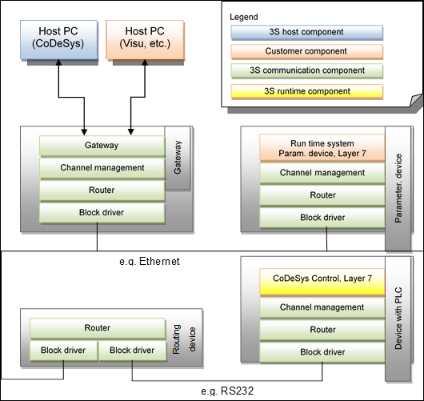

5.5.1. Overview¶
In the communication system for CODESYS V3 a distinction is made between four main communication device types. Simple nodes form the core of the communication system. They form a logic tree referred to as the control network and implement the CODESYS communication stack. A gateway is itself a node within this tree and in addition offers an access point to this network from outside. Clients, on the other hand, are not part of the network. Instead they use a gateway to communicate with nodes in the network. Proprietary devices generally have no CODESYS runtime system and use any non-CODESYS communication protocol.
The communication is based on existing network protocols such as UDP, CAN, serial etc. They can be located at different levels. The communication protocol within the network is defined in layers, based on the ISO/OSI Reference Model. The following table provides a comparison of the ISO/OSI layers and the components specified for CODESYS:
Layer |
ISO/OSI |
CODESYS |
Description |
|---|---|---|---|
1 |
Physical layer |
Not specified (defined through lower-level communication systems). |
|
2 |
Data link layer |
Block driver |
Mapping of the communication to lower-level network protocols. Ensuring data consistency (CRC). Sending of blocks with defined maximum length. |
3 |
Network layer |
Router |
Sending of packets across several stations, “routing”/multiplexing of packets from several senders/receivers on a single “line” |
4 |
Transport layer |
Channel management |
Secure, connection-oriented end-to-end communication with packet repetition, timeout monitoring, … |
5,6 |
Session or presentation layer |
Not specified |
|
7 |
Application layer |
Application services |
Specification of the data exchange format, distribution of requests to service handlers |
Table 1 – Comparison of ISO/OSI and CODESYS model
The following diagram illustrates the structure of the communication stacks and the communication between different device types:
5.5.1.1. Usage scenarios¶
In order to be able to work conveniently (Plug&Play), securely and reliably within different project phases, a distinction is made between three operating modes, with associated network behavior.
Commissioning During commissioning the addresses of all nodes are determined dynamically. Manual intervention is reduced to a minimum. During this phase the node addresses may change fundamentally.
Normal operation During the transition to normal operation all node addresses are „frozen”, i.e. each node stores its address permanently and automatically reloads it after a restart. Adding/removing nodes in this state has no effect on the addresses of the other nodes. Addresses are only changed if requested explicitly.
Maintenance If a programming or service PC is connected during operation for maintenance of individual nodes, this PC will automatically be assigned an address, although it will not be able to change the addresses of the other nodes. In the delivery state new nodes are set to commissioning, i.e. the node address is automatically assigned according to the network topology, without affecting the addresses of other nodes in the event of misconfiguration. Once the new node has been implemented correctly, it is set to normal operation, which means its address is fixed.